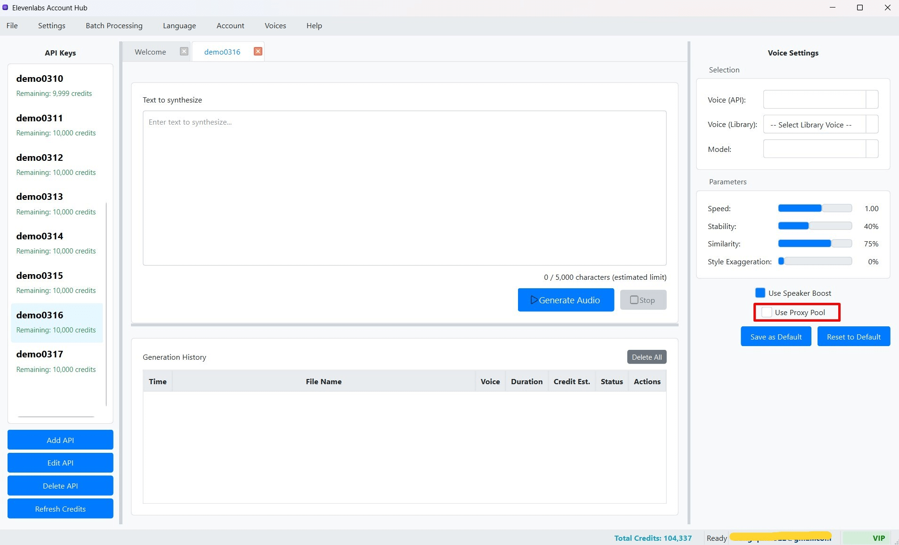

Kích hoạt và Sử dụng Proxy Pool Chung khi Tạo Giọng nói (TTS)
Sau khi bạn đã thiết lập và quản lý Proxy Pool Chung của mình, bạn có thể dễ dàng kích hoạt việc sử dụng các proxy này cho các tác vụ Text-to-Speech (TTS). Việc này cho phép các yêu cầu API đến ElevenLabs được định tuyến thông qua các proxy trong pool thay vì sử dụng proxy riêng (nếu có) của từng Khóa API hoặc kết nối trực tiếp.
1. Kích hoạt "Sử dụng Proxy Pool" trong Bảng Cài đặt (Settings Panel)
Tùy chọn để sử dụng Proxy Pool Chung được quản lý trong Bảng Cài đặt (Settings Panel) cho mỗi tab TTS đang hoạt động:
- Đảm bảo bạn đang ở trong tab TTS (Cột Giữa) của Khóa API mà bạn muốn áp dụng Proxy Pool.
- Nhìn sang Bảng Cài đặt (Settings Panel) ở Cột Phải.
- Trong số các tùy chọn cấu hình, bạn sẽ tìm thấy một ô đánh dấu (checkbox) có nhãn "Sử dụng Proxy Pool" (Use Proxy Pool).  (Hình ảnh: Tùy chọn "Sử dụng Proxy Pool" trong Bảng Cài đặt TTS)
- Để kích hoạt: Đánh dấu (check) vào ô "Sử dụng Proxy Pool". Khi được kích hoạt, các yêu cầu TTS từ tab này sẽ cố gắng sử dụng các proxy từ Proxy Pool Chung của bạn.
- Để vô hiệu hóa: Bỏ đánh dấu (uncheck) ô này. Khi đó, phần mềm sẽ:
- Sử dụng proxy riêng đã được cấu hình cho Khóa API đó (nếu có và được bật).
- Hoặc, nếu Khóa API không có proxy riêng được cấu hình (hoặc proxy riêng bị tắt), yêu cầu sẽ được gửi trực tiếp đến ElevenLabs mà không qua proxy.
Lưu ý quan trọng:
- Tùy chọn "Sử dụng Proxy Pool" này là một phần của cài đặt TTS cho tab hiện tại. Nếu bạn muốn cài đặt này được lưu làm mặc định cho Khóa API đang hoạt động (để mỗi khi bạn chọn Khóa API đó, tùy chọn này tự động được bật/tắt theo ý muốn), bạn cần nhấn nút "Lưu Cài đặt" (Save Settings) trong Bảng Cài đặt sau khi đã thay đổi trạng thái của ô checkbox này. Xem thêm tại Lưu Hồ sơ Cài đặt TTS.
- Để tính năng này hoạt động hiệu quả, Proxy Pool của bạn cần phải có ít nhất một proxy đang hoạt động và được đánh dấu là "Kích hoạt" (Active) trong Trình quản lý Proxy Pool. Nếu Proxy Pool trống hoặc tất cả các proxy trong đó đều không hoạt động, việc kích hoạt tùy chọn này có thể không mang lại hiệu quả mong muốn hoặc thậm chí có thể gây lỗi kết nối.
2. Cách Hoạt động khi "Sử dụng Proxy Pool" được Kích hoạt
Khi tùy chọn "Sử dụng Proxy Pool" được kích hoạt và bạn nhấn nút "Generate Audio" (hoặc khi một tác vụ trong Xử lý Hàng loạt sử dụng cài đặt này):
- Phần mềm sẽ bỏ qua mọi cấu hình proxy riêng (nếu có) đã được thiết lập cho Khóa API đang được sử dụng cho tác vụ TTS đó.
- Thay vào đó, nó sẽ truy cập vào danh sách các proxy đang hoạt động trong Proxy Pool Chung của bạn.
- Luân chuyển Proxy (Proxy Rotation): Phần mềm sẽ cố gắng chọn một proxy từ pool để thực hiện yêu cầu. Nếu bạn thực hiện nhiều yêu cầu TTS liên tiếp hoặc trong một lô xử lý hàng loạt, phần mềm có thể tự động luân chuyển qua các proxy khác nhau trong pool. Cơ chế luân chuyển này giúp phân tán các yêu cầu của bạn qua nhiều địa chỉ IP khác nhau.
- Xử lý Lỗi Proxy (Proxy Error Handling): Nếu một proxy được chọn từ pool gặp lỗi trong quá trình kết nối hoặc thực hiện yêu cầu (ví dụ: không kết nối được, timeout, bị chặn), phần mềm được thiết kế để:
- Đánh dấu proxy đó là "không hoạt động" tạm thời trong phiên làm việc đó (để tránh thử lại ngay lập tức).
- Tự động thử một proxy khác từ pool (nếu còn proxy hoạt động và chưa bị thử lỗi).
- Quá trình này có thể lặp lại cho đến khi tìm được một proxy hoạt động hoặc khi tất cả các proxy trong pool đều đã được thử và thất bại. Trong trường hợp tất cả proxy đều lỗi, bạn có thể nhận được thông báo và tùy chọn để tiếp tục mà không cần proxy hoặc dừng tác vụ.
3. Các Trường hợp Sử dụng Tối ưu cho Proxy Pool
- Xử lý Hàng loạt (Batch Processing): Đây là trường hợp sử dụng chính và mang lại lợi ích lớn nhất. Khi bạn cần tạo giọng nói cho hàng trăm hoặc hàng ngàn đoạn văn bản, việc luân chuyển qua một Proxy Pool lớn và đa dạng giúp giảm thiểu đáng kể rủi ro bị giới hạn hoặc chặn IP từ ElevenLabs.
- Sử dụng Nhiều Tài khoản Miễn phí: Nếu bạn đang quản lý và sử dụng nhiều tài khoản ElevenLabs miễn phí, việc định tuyến các yêu cầu từ các tài khoản này qua một Proxy Pool giúp che giấu việc nhiều tài khoản hoạt động từ cùng một địa điểm.
- Tăng cường Ẩn danh Chung: Khi bạn muốn tất cả các yêu cầu TTS của mình (bất kể từ Khóa API nào) đều đi qua một lớp proxy để tăng tính ẩn danh.
- Vượt qua Giới hạn Tạm thời: Nếu bạn nghi ngờ địa chỉ IP chính của mình đang bị giới hạn tạm thời bởi ElevenLabs, việc sử dụng Proxy Pool có thể giúp bạn tiếp tục công việc.
Mẹo: Để Proxy Pool hoạt động hiệu quả nhất, hãy đảm bảo bạn có một danh sách proxy chất lượng, đa dạng (nếu có thể) và thường xuyên sử dụng chức năng kiểm tra trạng thái của chúng trong Trình quản lý Proxy Pool để loại bỏ các proxy không còn hoạt động.